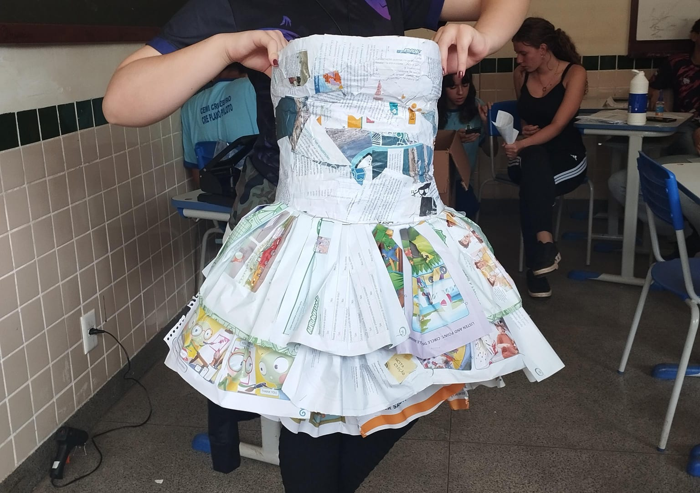

trouxemos aqui para apresentar no SARAU, dois temas de desfile, o primeiro foi o tema sobre reciclagem, onde as meninas produziram vestidos recicláveis, com objetivo de ajudar o meio ambiente.
o segundo tema (desfile afro) para lembrarmos que a consciência nao tem cor, e sim convicções de quem você é consigo mesmo e as pessoas em volta.
consciência x reciclagem
Estamos felizes por visitar nosso site.
*nota que entre parênteses'()' de cada pessoa está a função designada dentro do trabalho*
aqui e uma das roupas que fizemos para aprensentação do desfile
